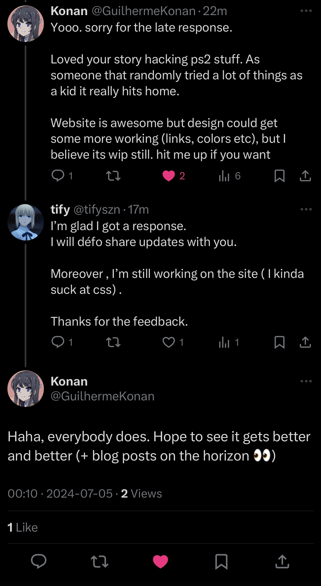

Are there still great people on Earth? Absolutely! I met @Konan on Twitter, and I really love his website. I decided to take a shot and ask him what font he uses. He told me he uses JetBrains Mono font on his site.  I was thrilled to get a reply from him. He even offered to help me with my website and stays updated with my progress. Thanks, Konan!
~ Back to home